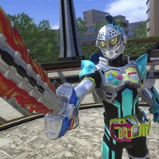
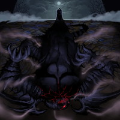

八木 千比良
豪雀朱院＝J＝鳳世輝
水燃 冥伽
ショット・キルニア

ブレイブクエスト２
～神々の商店街～
幻
海猪狩 航路

ＰＬ＝Ｄ
王城宮 夏恋
ピース・パズメル
ソルト・レイン
ヴェン・アーライミ
①：
あなたはAE【 ホールド 】による被害ダメージを受けない。
②：
あなたはAE【 ホールド 】に格闘攻撃を併用できる。
③：
あなたのAE【 絞め付け 】はダメージロールを半減せず、そのまま適用となる。
もっとも、あなたならこの力を使うまでもないか。
①：
あなたがアタッチメントを使用した場合に発動する(使用にはGMの許可が必要)。
あなたは因子Dを２つ得る。
あなたは因子Dを２つ得る。
②：
あなたが因子ダイスを１つ以上所持する場合、
あなたはその数だけ装甲点にボーナスを得る。
あなたはその数だけ装甲点にボーナスを得る。
富というのは、意外と近くに転がっている。
①：
あなたのAE【コンセントレイション：攻】は効果が倍となり、効果上限を無視できる。
②：
あなたのSPE【激励】は、自身を含む全ての味方に適用する。
焼き尽くすのではなく、闇を照らす暖かな炎だってある。
①：
あなたが自身の能力で強化【攻】を付与されている場合、その数だけこの特性のレベルは上昇する。
②：
あなたの能力精度は倍となり、回避判定へ常に＋１０のボーナスを得る。
③：
あなたの回避判定は、【この特性のレベル×３】のペナルティを得る。
相手に歩み寄る理由というのは大きく分けて二つだ。
一つは互いに手を取り合うため。もう一つは相手を殺すため。
一つは互いに手を取り合うため。もう一つは相手を殺すため。
①：
【暴走チェック】以外の理由であなたの暴走率が上昇する毎に、
またはバトルに勝利する度に、この特性のレベルを【１】上昇させる。
またはバトルに勝利する度に、この特性のレベルを【１】上昇させる。
②：
あなたの能力精度は、【この特性のレベル×３】の数値となる。
巨人がただの風車だったとしても、覚悟の重さに嘘はない。
①：
あなたはカルマ【 殺人者 】を得る。
②：
あなたは戦闘中でもAE【 不意打ち 】を使用できる。
その一撃さえ届かない獲物を、彼は孤独に待っている。
①：
あなたが【威圧】【話術】にAE【コンセントレイション】を使用する場合、
その効果は倍となり、効果上限を無視できる。
その効果は倍となり、効果上限を無視できる。
②：
あなたが使用するアタッチメント【焼印】は以下の効果となる。
●戦闘不能状態のNPC１体を対象として発動する。
そのNPCはセッション終了時まで状態異常の解除ができない。
●戦闘不能状態のNPC１体を対象として発動する。
そのNPCはセッション終了時まで状態異常の解除ができない。
人間には無限の可能性と価値がある。
①：
あなたは戦闘不能状態のユニットを攻撃対象に選択できる。
②：
あなた、またはそのクリーチャーが攻撃を受ける場合、その初回リアクションで因子ダイスを【４ｄ】消費して発動できる。
その攻撃と効果を無効にする。
その攻撃と効果を無効にする。
③：
あなたの攻撃によってユニットがロストした時に発動する。
総額が【そのユニットの基礎ｐｔ】以下になるように、あなたは消費アイテムを獲得する。
総額が【そのユニットの基礎ｐｔ】以下になるように、あなたは消費アイテムを獲得する。
遊び終わったら、おもちゃ箱にしまいましょ。
○：
あなたが使用する継続系のダメージ回数は、【あなたの活性レベル】だけ増加する。
暗い夜更けさえ真昼刻にしてしまう。
○：
【王城宮 夏恋】が使用するアタッチメント【セバスチャン】は以下の効果となる。
●自分または味方が【技能判定】を行う場合に発動できる。その判定は【＋１ｄ】のボーナスを得る。また、その判定結果時、１度だけその判定をやり直すことができる。
●自分または味方が【技能判定】を行う場合に発動できる。その判定は【＋１ｄ】のボーナスを得る。また、その判定結果時、１度だけその判定をやり直すことができる。
どんな時だって傍らにいる。
①：
あなたはバトル中の自プリアクションおよびENフェイズにも、
自身を対象としてAE【応急処置】を宣言できる。
自身を対象としてAE【応急処置】を宣言できる。
②：
あなたがAE【強度感知】および自身を対象としたAE【応急処置】を宣言する場合、
その判定は【能力精度】分のボーナスを得る。
その判定は【能力精度】分のボーナスを得る。
①：
バトル中、あなたが能力攻撃ダメージ判定を行う毎に、
あなたは次R中のIN値に【ダメージ判定結果÷2】のボーナスを得る。
あなたは次R中のIN値に【ダメージ判定結果÷2】のボーナスを得る。
②：
あなたが他者から受けるダメージは【あなたの暴走率÷１０】だけ減少し、
あなたが他者に与えるダメージは【あなたの暴走率÷１０】だけ上昇する。
あなたが他者に与えるダメージは【あなたの暴走率÷１０】だけ上昇する。
③：
あなたの【SE/リスク】は維持時間が【任意（バトル終了まで）】となる。
（リスクロールは対抗宣言終了ごとに都度行う）
（リスクロールは対抗宣言終了ごとに都度行う）
正義は急ぐべきだ。
超特急で現れるもう一つの正義と衝突しない内に。
超特急で現れるもう一つの正義と衝突しない内に。
この特性の③の効果はセッション中に１度しか使用できない。
①：
セッション開始時、あなたは【K/英雄】を得る。
この効果で取得した【K/英雄】の補正量は【＋０d】となる。
この効果で取得した【K/英雄】の補正量は【＋０d】となる。
②：
あなたがカルマを適用して判定を行う場合、任意の数字を１つ宣言できる。（既に宣言した数字は不可）
出目に【宣言した数字】が存在する場合、あなたは【（宣言した数字）Rd】分の因子ダイスを得る。
存在しなかった場合、あなたは【宣言した数字】分だけ暴走率を上昇させる。
出目に【宣言した数字】が存在する場合、あなたは【（宣言した数字）Rd】分の因子ダイスを得る。
存在しなかった場合、あなたは【宣言した数字】分だけ暴走率を上昇させる。
③：
他者の判定時、REとして宣言できる。
その判定ダイス数を【あなたの活性レベル】分だけ減らす。
この効果でダイス数が【０】以下となる場合、その判定は【自動失敗】となる。
その判定ダイス数を【あなたの活性レベル】分だけ減らす。
この効果でダイス数が【０】以下となる場合、その判定は【自動失敗】となる。
求めても、窮まっても、視てくれないという結果は変わらなかった。